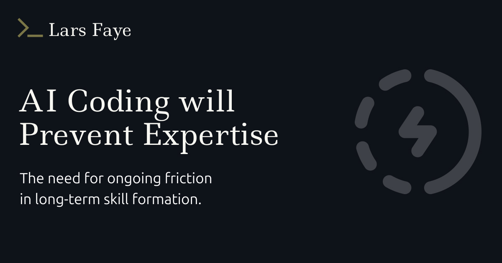
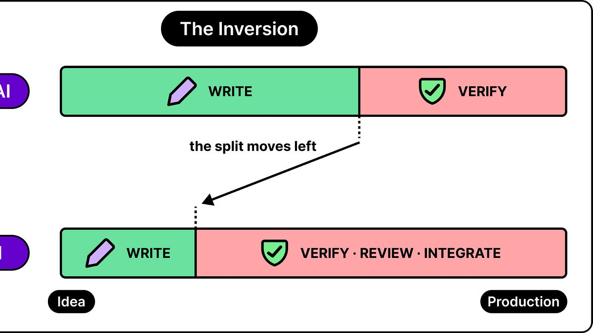
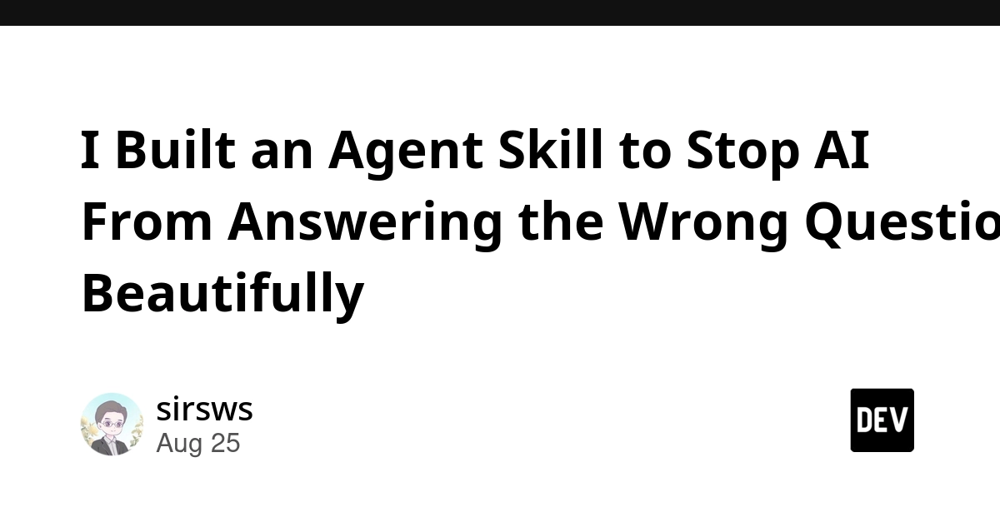
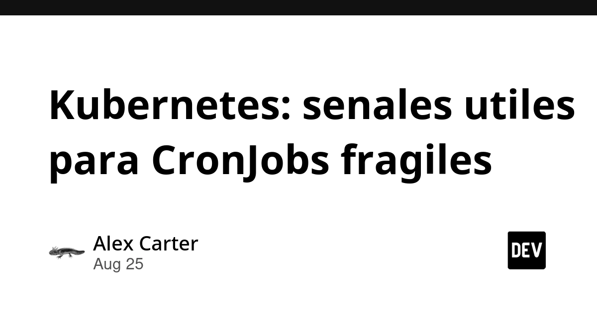
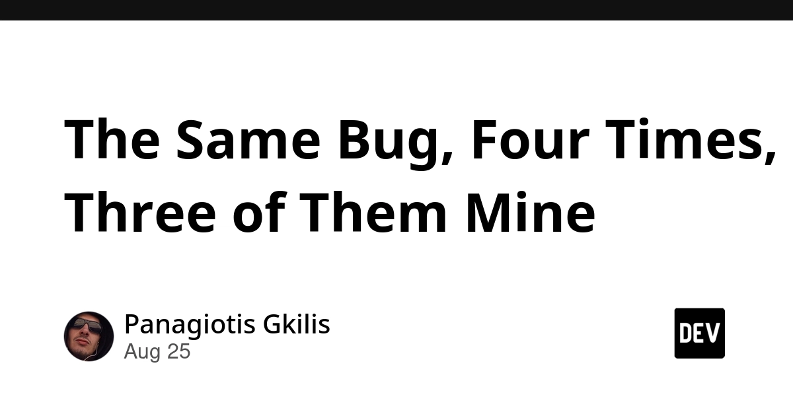
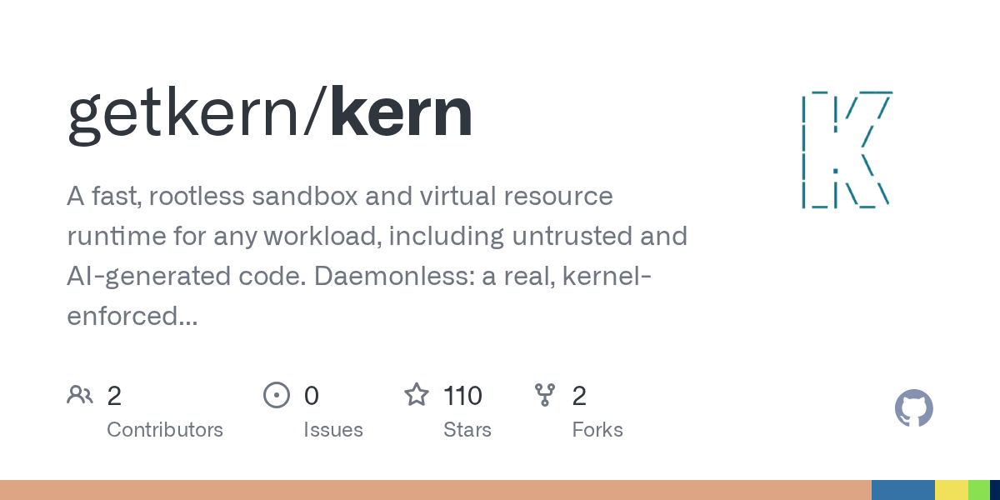
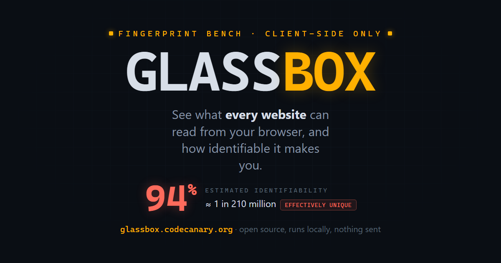

🔥 Top 3 (must read)
Coding expertise is going to collapse from AI reliance
(HN discussion, 484 points, 475 comments) The author argues that leaning on AI coding tools every day slowly erodes a developer's own skill. The huge comment count shows this hits a nerve across the industry right now. Why it matters: as an EM deciding how your team adopts AI coding tools, this is the debate you'll need an answer for.

Automating root cause analysis at scale: Multi-signal correlation for cloud native incident response
Atlassian explains how they stopped relying on humans to manually connect the dots across telemetry from hundreds of microservices, and built automated correlation instead. It's a real case study on incident response at scale. Why it matters: directly useful if you run or advise on distributed systems and SRE/on-call practice.
Why Code Verification Matters More Than Ever in the Age of AI
ByteByteGo looks at how code verification (checking that code actually does what it should) works, and why AI-generated code makes this more important, not less. Why it matters: gives you language and a framework for code review practice as more of your team's code comes from AI agents.

🛠 Tools & releases
llm-anthropic 0.27
updated Anthropic plugin for the
llm CLI tool, now compatible with anthropic-sdk-python v1.0.0.S
Your executable is a SQLite database
a clever Linux trick: make a SQLite file double as a runnable ELF binary.
S
🤖 AI for developers
LLM Memory vs Context Window: The Gap Nobody Explains
why confusing "context window" with "memory" quietly runs up your AI agent's bill, with a real debugging story.
I Built an Agent Skill to Stop AI From Answering the Wrong Question Beautifully
a skill designed to make an AI agent check it solved the real problem, not just produce a confident-sounding answer.

👔 Engineering & teams
Kubernetes: señales útiles para CronJobs frágiles
(Spanish) — a concrete rule of thumb for triaging flaky K8s CronJob failures during on-call, instead of chasing each alert from scratch.

The Same Bug, Four Times, Three of Them Mine
why "pass/fail" validation tooling misses a third state (not actually checked), learned by shipping the same bug repeatedly.

Ship It Conversations: Justin Garrison on Kubernetes, Platform Engineering, AI, Golden Paths
podcast on platform engineering, golden paths, and knowing what a platform team should say no to.
🎯 For me
The HN piece on AI eroding coding skill, the ByteByteGo code-verification piece, and the Atlassian RCA case study are the best fits today — all speak to your EM angle on AI adoption and to distributed-systems/SRE practice. Nothing landed squarely on Node.js/React/Flutter or Playwright/Maestro today.
💡 App ideas & indie builds
PicoMQ – Durable Streams over HTTP, on object storage
(HN) — a message queue that stores durable streams directly on object storage instead of a dedicated broker. Good inspiration if you ever want a cheap, low-ops queue for a side project.
P
Kern – container and resource runtime in a 1.5 MB binary, no daemon
(HN) — runs containers without a background daemon process, in a tiny binary. Interesting for anyone who finds Docker too heavy for small tools.

GlassBox – what the browser reveals, and how identifiable you are
(HN) — shows a visitor exactly what data their browser leaks and how unique/trackable it makes them. Solves the "I don't understand my own privacy exposure" problem in a very visual way.

I built an app that lets couples fill empty wedding seats with strangers who actually want to be there
matches empty wedding seats to strangers who'd enjoy attending. A niche but very human problem (wasted seats, awkward guest counts) turned into a matchmaking app.
R
I'm 14 and built a tool that proves you actually wrote your essay
records every keystroke/pause/paste while writing, then replays it to prove authorship after being wrongly flagged by an AI detector. A sharp response to a very current problem (false AI-writing accusations).
R
🎓 Try this
Read I Built an Agent Skill to Stop AI From Answering the Wrong Question Beautifully and try building a similar "check the real question first" skill for your own Claude Code / Copilot agent workflows.